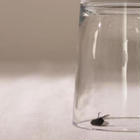
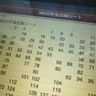
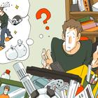

掃除洗濯のコツ、広く見せる収納のアイデア、各種手続きのやり方まで「暮らし」周りの便利な知恵を集めました。シーズンごとに現れる悩みや疑問もスッキリ解消！身近なテーマが揃った、日常生活をより快適に彩るハウツーをお役立てください。
このカテゴリの中でよく読まれているタグ
2,633件中 1 - 20 件を表示
-

コバエを一網打尽！ビールやお酢を使ってトラップを作る方法
だんだん暖かくなってくると、台所などにコバエが発生してきますよね！けっこう憂鬱になります。 でも、飲み残しのビールやお酢を使ったトラップで一網打尽にする方法を知ったことでかなり快適に暮らせるようになりました！ この記事ではそんなコバエ...
2011年04月05日作成/2018年06月08日更新
-

365日貯金シートを作ろう！コツコツ貯金を楽しむ方法
1から365までの数を順番に足していくといくつになるでしょうか。ためしに計算してみたら、66,795でした。1年365日の貯金額としたら、66,795円はそう多くはない金額のように思えますが、無理なくいつの間にか貯まる額と考えれば、実...
2012年10月18日作成/2018年06月08日更新
-
長期間、家を留守にするときやっておくべきこと
長期旅行などで、家を長期間留守にするときにやっておいた方が良いことを紹介します。 長期間、家を留守にするときには、郵便物を局止めにするように手続きをしておきます。 また、新聞が郵便受けにたくさんたまっているのはとても見苦しいものですし...
2010年02月12日作成/2018年06月08日更新
-

今年も「キレイ」をキープするための！大掃除術
年末に一念発起して大掃除したはいいものの、年が明けてしばらく経つと元の「散らかった状態」になっている…なんて経験がある人はわりと多いのではないでしょうか。 せっかくの大掃除です。1年間散らからないようにするには、何に気をつければいい...
2014年12月07日作成/2018年06月07日更新
-
【結婚後の手続き】結婚後の免許証、パスポートの届出
結婚して名前が変わると、色々と手続きが必要になります。ここでは主に、運転免許証とパスポートの手続きにつて紹介します。 変更の際、必要なものは以下のものです。 この手続きは、運転免許試験場か最寄の警察署で行います。引越し後、速やかに行...
2012年04月16日作成/2018年06月06日更新
-
家を建てる人必見！窓選びで知っておきたいポイント
家を建てる上で窓はとても重要なパーツです。 光や風を採り入れるだけでなく、寒暖の調節にも役立ちます。 ここでは、窓選びで知っておきたいポイントについてご紹介します。 最適な光の採り入れ方は、家ごとに異なります。 まずは、採光条件の最...
2013年03月26日作成/2018年06月06日更新